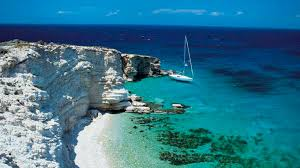
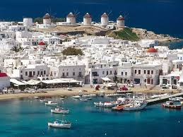

LUGARES TURISTICOS DE GRECIA
| NOMBRE | DESCRIPCION | IMAGEN |
|---|
| Atenas |
Atenas, la capital de Grecia, es una antigua e histórica ciudad costera del Mar Mediterráneo de la zona euro. Localizada en la parte sur del país, es el centro económico, político y cultural del mismo. Fuente:https://lanzateyviaja.com/grecia/lugares-turisticos |
|
| Kos |
Kos es famosa por sus condiciones favorables para la práctica de deportes acuáticos, así como por sus magníficas playas. Fuente:https://lanzateyviaja.com/grecia/lugares-turisticos |
 |
| Santorini |
Uno de los principales atractivos turísticos de Grecia es la isla de Santorini. Su metrópoli principal, Fira, es famosa por sus casas hermosamente pintadas de blanco, con puertas y ventanas de color azul. Fuente:https://lanzateyviaja.com/grecia/lugares-turisticos |
|
| Mykonos |
es una pequeña isla de Grecia en el archipiélago de las islas Cícladas del mar Egeo, muy solicitada por los turistas. Durante todo el día Mykonos tiene una característica especial, y es el intenso viento predominante. Fuente:https://lanzateyviaja.com/grecia/lugares-turisticos |
 |